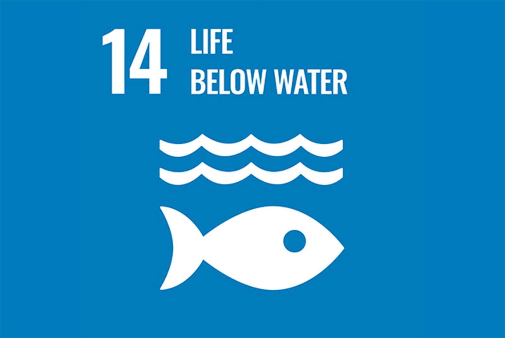

SDGs 14
SDG 14：保育與可持續利用海洋與海洋資源的核心目標是保護海洋生態系統，減少污染，並促進海洋資源的可持續利用。海洋是地球生態系統的重要組成部分，不僅支持全球生物多樣性，還提供人類賴以為生的食物和經濟資源。然而，海洋正面臨污染、過度捕撈、氣候變化和酸化等多重威脅，因此需要全球共同努力來保護。該目標特別強調到2025年必須顯著減少來自陸地活動的污染，例如海洋垃圾和養分污染，這些問題正大規模地威脅海洋生物的生存與繁殖。同時，還要求在2020年前實施措施，保護海洋生態系統的完整性，避免退化並提升復原力。應對海洋酸化是另一項重點，透過國際合作研究其影響並制定相應對策，能有效緩解酸化對生態的威脅。此外，SDG 14也聚焦於可持續漁業管理，旨在終止過度捕撈和非法捕魚行為，確保海洋資源的長期供應。到2030年，全球應至少保護30%的海洋和沿海區域，從而維護生態平衡。同時，對於發展中國家特別是小島和沿海國家，該目標致力於提升資源管理能力，促進「藍色經濟」的發展，讓更多人受益於海洋資源。為實現這些目標，科學研究和技術創新至關重要。國際社會需要加強合作，推動技術發展來解決海洋污染和資源管理問題，並支持小規模漁業的發展。只有通過全球共同努力，才能實現海洋生態的可持續利用，確保這片蔚藍的資源為子孫後代提供福祉。